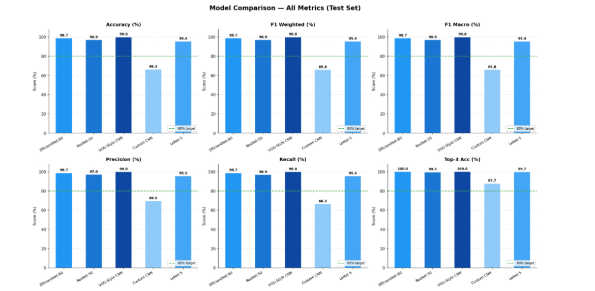

Projects

Face Recognition Attendance System
computer visionA computer vision project that improves facial recognition accuracy through image processing and deep learning. The pipeline processes 1,005 grayscale facial images from 10 individuals, applies multiple enhancement techniques including median filtering, histogram equalization, contrast stretching, high-boost filtering, and gamma correction, then trains a CNN for facial classification. The model was evaluated using accuracy, confusion matrices, classification reports, and training curves, achieving 97.1% accuracy after enhancement compared to 85% before enhancement. The work was also developed into a research paper published in the IEEE ICCA 2025 proceedings.

Sign Language to Text
computer vision · mlA computer vision and machine learning system for recognizing sign language gestures and converting them into text. The project processes a public sign language dataset, prepares the data for model training, and trains and evaluates five different machine learning models. Their performance is compared using evaluation metrics to identify the most accurate and reliable approach for sign language recognition.
Project currently being prepared
CS Research Paper Web Scraper
data engineeringA web scraping project inspired by arXiv that collects computer science research papers, extracts structured information, and organizes the data by category for further analysis.

MERN Stack Web Application
full-stackA full-stack MERN web application featuring user authentication, protected routes, RESTful APIs, and MongoDB data management. The project integrates frontend, backend, database, and basic security practices into a complete end-to-end application.

C# Game Development
systemsTwo interactive games developed in C# using object-oriented programming and core game-development concepts, including game logic, collision detection, event handling, player interaction, and graphical components.

Employee Management System
PythonA desktop-based employee management system built with Python and Tkinter. The application manages full-time, part-time, and freelance employees, providing employee CRUD operations, salary calculation, attendance tracking, filtering, sorting, statistics, and JSON-based data storage.
More code and in-progress work lives on github.com/rowidamorsy.